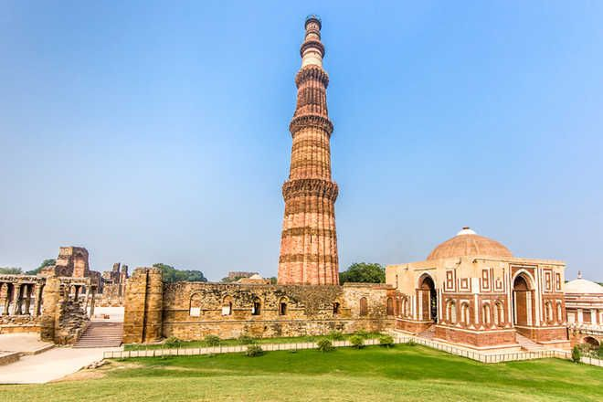
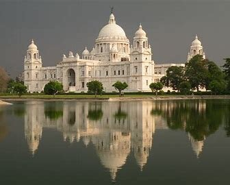
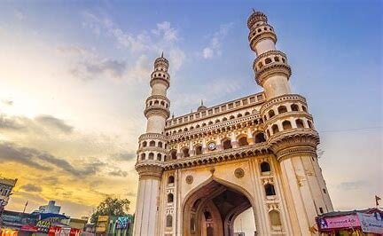

List of Most Famous Historical Places in India
The many temples, forts, palaces and monuments in the country make up the historical places of India.
These reflect the splendid heritage and culture of the country
1. Taj Mahal, Agra

Taj Mahal is one of the seven wonders of the world and is considered to be the most popular tourist attraction in the country. A symbol of love, the Taj was built by Mughal Emperor Shah Jahan for his queen Mumtaz. Tagore described the Taj as a "teardrop on the cheek of eternity". The monument attracts a lot of tourists all around the year.
Covering an area of approximately 42 Acres, the construction of the Taj Mahal began in 1631 and it took 17 years before it was completed in 1648! It was constructed using white marble obtained from Makrana in Rajasthan.
Built By: Shah Jahan
Built In: 1648
Entry fee: Indians- INR 40 Foreigners- INR 1000 No entry for children below 15 years of age
2. Qutub Minar, Delhi
One of the tallest creations in the Indian History is the Qutub Minar. With its red sandstones and aesthetic Iranian architecture. The minaret is the most famous tourist attraction of India. This UNESCO site towers at a height of 240 feet making it one of the tallest ancient towers across the globe. Assimilate history of the minaret by reading the inscriptions. Built by Qutub Ud-Din-Aibak.
Architecture:
Incredible Qutub Minar has a height of 240 ft. with a diameter of 14.3 m at the base and 2.7 m at the top.incredible Qutub Minar soars to a height of 240 ft. with a diameter of 14.3 m at the base and 2.7 m at the top.also 65 m above the ground level. building has been built with red sandstone and marble.
Built By:Qitub-ud-Din Aibak
Built In:1193
3. Hawa Mahal, Jaipur

The Hawa Mahal stands at the intersection of the main road in Jaipur, Badi Chaupad. It is regarded as the signature building of Jaipur and was built by Maharaja Sawai Pratap Singh.
Time to Visit: October to March
Architecture:
It is a unique five storey Palace looks similar to honeycomb because of the 953 small windows called jharokhas,windows allow the breeze to flow in and helps in keeping the palace cool.alace is tilted at an angle of 87 degrees,tands at an elevation of 50 feet above the ground
Built By:Pratap Singh
Built In:1799
4. Victoria Memorial, Kolkata
The Victoria Memorial is a large marble building, which is considered to be the pride of Kolkata. Built between 1906 and 1921, it is dedicated to the memory of Queen Victoria. Now, it is a museum and a popular tourist spot under the Ministry of Culture.
Best Time to Visit: March and October
Architecture:
chief architect of the Victoria Memorial is William Emerson,The 184 feet high building is constructed with Makrana Marble of white colour that was brought all the way from Jodhpur, Rajasthan. The vast gardens that surround the monument, and are spread over a sprawling 64 acres, were designed by botanist Sir David Prain and Lord Redesdale.
Built By:Lord Curzon
Built In:1921
5. India Gate, Delhi

The All India War Memorial, popularly known as the India Gate, is a war memorial located in New Delhi. It is dedicated to the 82,000 soldiers, both Indian and British, who died during the First World War and the Third Anglo-Afghan War. The Amar Jawan Jyoti is the burning structure, right underneath the archway, which symbolizes the eternal, immortal soldiers of India.
Best Time to Visit: February to April and August to November
Dedicated to 82,000 Indian and British soldiers who died during the First World War and the Third Anglo-Afghan War, this monument has the names of 13,300 servicemen inscribed on its surface
Built By:Edwin Lutyens Built In:1921
6. Charminar, Hyderabad
Charminar is the most important landmark in the city of Hyderabad. The monument was erected when Quli Qutb Shah shifted his capital from Golcondo to Hyderabad. The monument got its name from its structure as it consists of four minarets. The monument looks amazing during night when it is illuminated.
Best Time to Visit: Between the months of October and March
Charminar is a perfect square, inspired by the shape of the Shiya Tazias, each side 20 meters in length, There stands a 56 meters tall minaret at each corner with a double balcony